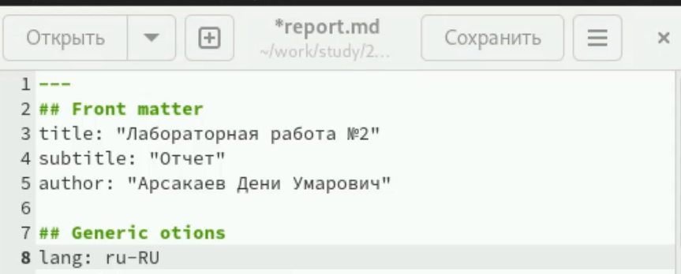
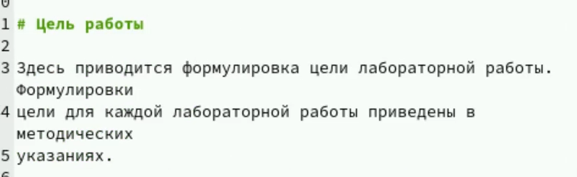
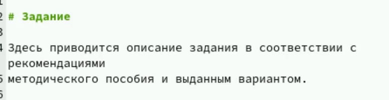
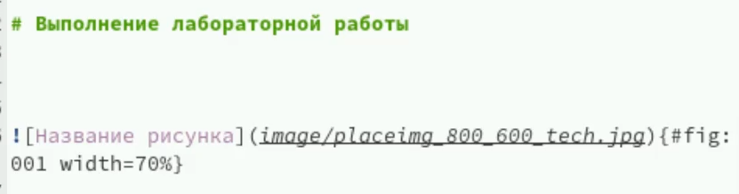
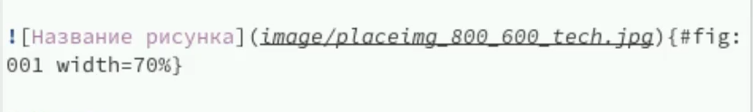
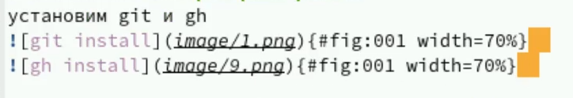
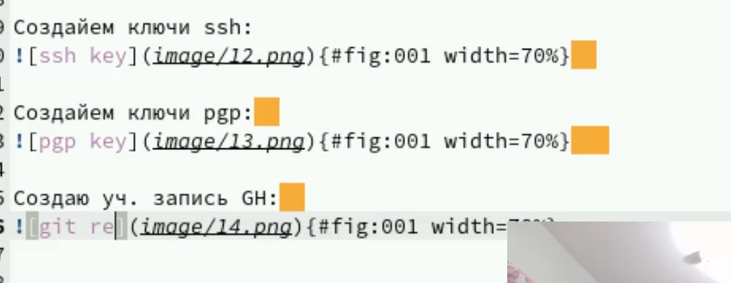
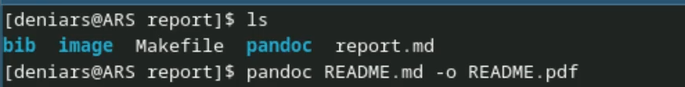
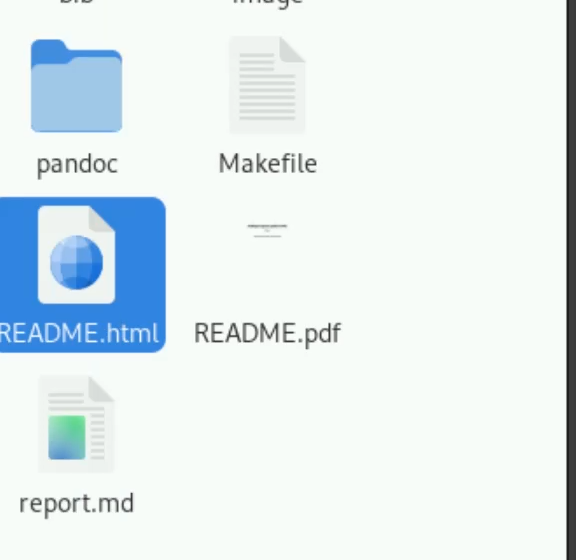

Изучение Markdown. Этот язык разметки позволяет легко форматировать текст, что делает процесс написания более удобным. Он обеспечивает хорошую читаемость даже в своем исходном виде, что упрощает работу с документами. Markdown поддерживается на многих платформах, таких как GitHub и Reddit, что делает его универсальным инструментом. Кроме того, его просто конвертировать в HTML и другие форматы, что расширяет его возможности. Для разработчиков Markdown становится незаменимым при написании документации, так как он облегчает совместную работу над проектами. Этот язык разметки позволяет быстро создавать и редактировать тексты без необходимости отвлекаться на сложные инструменты. Сосредоточение на содержании делает процесс написания более эффективным и минималистичным. Изучая Markdown, вы также получаете базовые навыки работы с разметкой, что может быть полезно в будущем. В целом, освоение Markdown значительно повышает продуктивность и упрощает работу с текстом.
Наша задача это разными спосабами сделать презентацию
Открываю .md файл и начинаю его заполнять
Первым делом нам нужно заполнить такие поля как title, subtitle и
author

Дальше нас встречает строка “Цель работы”
Тут мы кратко описывает что собираемся делать

Следем идут поля ‘Теоретическое введение’ и ‘Задание’
Их обычно я пропускаю т.к. наш отчет небольшой и эти поля не имеют
особого смысла в нашем случае

И самое важно поле над котором мы будем работать это ‘Выполнение лабораторной работы’
Здесь мы прикрепляем фотографии и описываем процесс

Чтобы прикрепить фото мы используем такую конструкцию>

где image - это папка, а после / идет название фото
Пару примеров см. фото


В конце отчеты заполняем поле ‘Выводы’
Теперь нам надо преоброзовать наш файл .md в файлы pdf, docx и html
Для этого мы используем команду pandoc report.md -o report.pdf

И вот такой результат мы получаем

Изучение Markdown открыло новые возможности для форматирования текста, создания документации и ведения заметок. Это простой и эффективный инструмент для работы с текстом в цифровом формате.